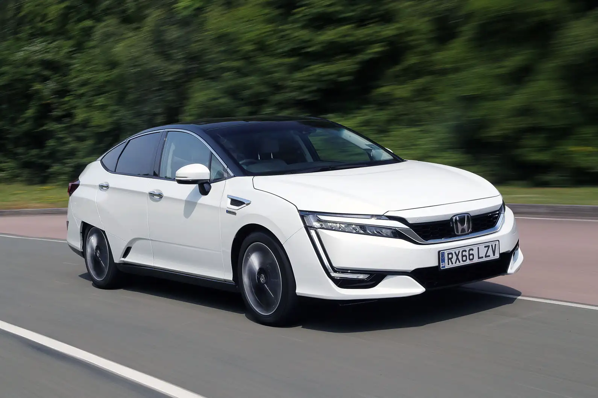

Honda Clarity: Modelos híbridos, eléctricos y de hidrógeno.El Honda Clarity fue un vehículo de propulsión alternativa producido por Honda entre 2008 y 2021. Se ofreció en tres versiones: eléctrico (BEV), híbrido enchufable (PHEV) y de pila de combustible (FCEV).
Su diseño aerodinámico y tecnología avanzada lo convirtieron en una opción destacada dentro de los vehículos ecológicos.

Honda e: Automóvil eléctrico compacto para el mercado japonés y europeo. El Honda e es un automóvil eléctrico compacto que Honda lanzó en
2020 como su primer modelo totalmente eléctrico. Destaca por su diseño retro-futurista y su tecnología avanzada.